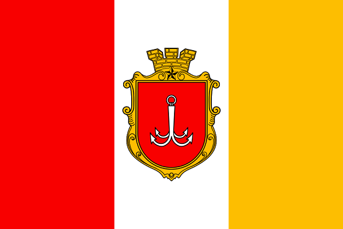
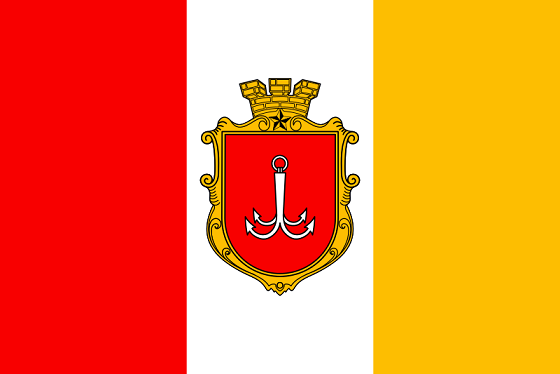

Одеса — місто в Україні, Одеська область, Одеський район. Адміністративний центр області та району. Третє найбільше місто країни після Києва та Харкова. Розташоване на узбережжі Чорного моря. Найбільший морський торговий порт держави. Культурно-освітній, туристичний, торговий, транспортний центр. Складова Одеської міської територіальної громади. Населення — 1 010 537 осіб (2022). Основа економіки — транспортні перевезення, машинобудівна, хімічна, нафтопереробна, харчова та легка промисловості. Працюють 37 закладів вищої освіти, шість театрів, вісім кінотеатрів, філармонія, цирк, музеї, галереї тощо.
Перші поселення на території Одеси засновані близько VII століття до н. е. — III століття н. е. давньогрецькими колоністами. У ХІІІ ст. цю місцевість заселила Ногайська орда, яка через якийсь час влилася до Золотої орди. Біля 1341 року узбережжя захопило Велике князівство Литовське, яке заклало тут фортецю Коцюбіїв. У XV ст. вона перейшла до складу Османської імперії і була перейменована на Хаджибей. 1789 року фортецю завоювала Російська імперія, яка перейменувала її на Одесу і надала статус міста. У 1819—1859 роках тут діяв торговий режим порто-франко, який сприяв стрімкому економічному розвитку. В ході українсько-радянських воєн місто входило до складу УНР, Української держави, більшовицьких і білих сил. 1920 року стало частиною УРСР. Під час Другої світової війни, у 1941—1944 роках, перебувало під окупацією Румунії. Від 1991 року — у складі незалежної України.
Історичний центр Одеси з 2009 року перебуває в попередньому спискові об'єктів Світової спадщини ЮНЕСКО. У центральній частині міста — ансамбль будівель кінця XVIII—XIX століть у стилях класицизму, ампіру, модерну тощо. У межах Одеси та її околицях знаходяться кліматичні та бальнеологічні курорти. Також під містом знаходиться велика мережа підземних ходів і лабіринтів, які утворюють одну з найбільших у світі катакомб із довжиною тунелів приблизно 2,5 тисячі кілометрів.
 
